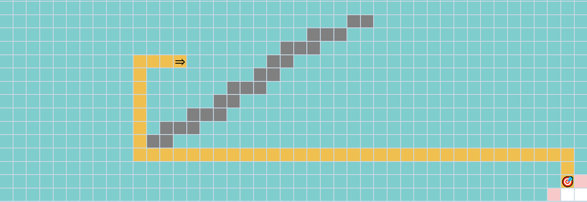
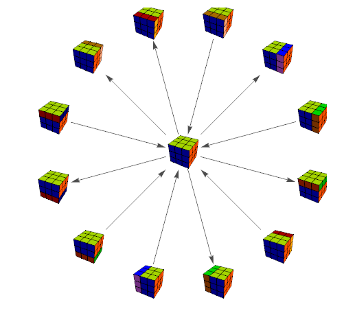
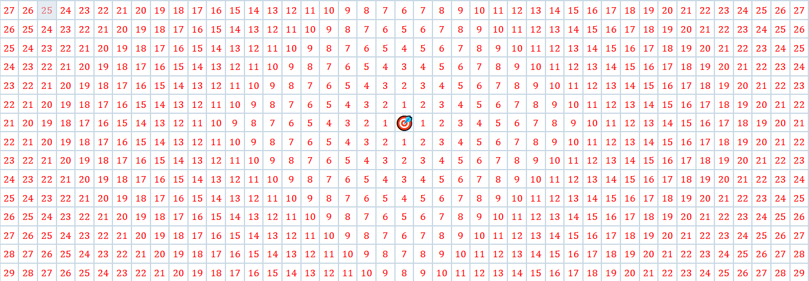
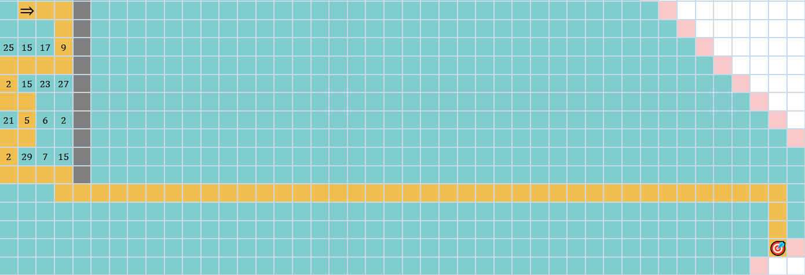
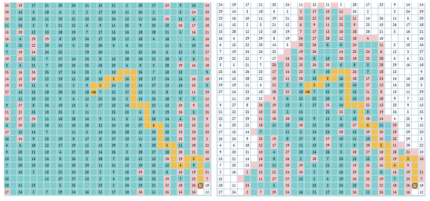

So what is a pathfinding algorithm? A pathfinding algorithm is an algorithm that tries to find a path between two points, in this case two tiles in a grid. From the point of view of the algorithm we don't know what lies ahead of us, we just know where we currently are, what we've already seen and whether the current tile we're on is the goal. The general procedure is to keep track of what tiles we've seen by storing them away in an agenda. We start at the start tile and add all of its neighbours to the agenda. We then take a tile from the agenda and add all of its neighbours to the agenda. This process is repeated until we reach the goal. How do we decide which tile to take from the agenda? That's how all the algorithms we'll explore differ from one another.
There are many applications for these algorithms. Whenever we need to find a path between any two points automatically (i.e google maps, finding a route in a video game) we’ll use a pathfinding algorithm. However, they also have a lot of applications that aren’t obvious at first glance. For instance, we can use them to solve rubix cubes by treating all the possible configurations of the cubes as points, and connections between any cubes that can be moved between by turning the cube. This forms a network, which can be explored using pathfinding algorithms. The path we get back can be used as a series of steps needed to solve the cube.
With this setup we can’t make a very clever algorithm, but we can still find any existing path and even guarantee that it’s the shortest. We just explore the grid until we hit the goal. How do we decide what tile to take from the agenda next?
One approach is to use stack (like a stack of papers) as the agenda. Since stacks follow a last in first out order, the tile we take from the stack will be the one seen most recently. This won’t find the shortest path, but it will find any path if it exists. This is called a "depth first search".
Another approach is to use a queue (like a queue outside a shop) as the agenda. Since a queue is first in first out the tile we take from the queue will be the one seen least recently. This is called a "breadth first search". This guarantees the shortest path, but why? When we explore, we start by adding all neighbours of the starting tile into the queue. These tiles are all one tile away from the starting tile. When we visit the next tile, we add all of its neighbours onto the queue, which are two tiles away from the starting tile. Since this is a queue, we explore all the tiles we seen least recently. Since the tiles that were one away were added first, we’ll get through all the tiles that are one away before we consider any tile two tiles away from the starting tile. This idea continues throughout the algorithm; we’ll consider the tiles that are two away before we consider the tiles that are three away and so on… When we visit the goal we know we’ve found the shortest way to get to it, because if a shorter way existed we’d have seen it before. Say the goal was 10 tiles away from the starting tile. We’ve already explored all the tiles at distances that are within 9 tiles away, and none of them were the goal, so we know for sure that the way we’ve got to the goal is the minimum distance, which means that it must also be the shortest path.
When you’re exploring the world not all roads are created equal. Some are smooth and easy to drive on, while some are bumpy and full of potholes. So what seems like the shortest path might not actually be the shortest path if we have to cross a bunch of badly paved roads. To model this, we can assign a tile a weight which tells us how much it costs to cross it. To find the shortest path, some algorithms will try to minimise the total cost. Algorithms that do this are weighted. However some algorithms simply ignore these weights. These algorithms are unweighted.
Breadth first search and depth first search don’t consider these weights, so we need a new algorithm, namely Dijkstra’s. The idea behind Dijkstra’s is to keep track of the total cost to get to each tile as we explore the grid. For instance if to get to a tile we had to get through tiles of weights 1, 2, and 3, then the total cost would be 6. When it comes to selecting which tile to visit next, we always pick the tile with the lowest total cost. This guarantees the shortest path for weighted grids, but why? The reasoning is similar to breadth first search. Since we always look at tile that are the smallest cost, we know that when we reach the goal there can’t have been a shorter path to the goal, as we would have already seen it before.
You may be wondering, what if we actually know where the goal is? For instance in a grid what if we could say for sure “the goal is in position (10, 10)”? We don’t necessarily know how to get to the goal, but we know what direction we should be looking in at least.
Since this is a coordinate system, we can estimate the distance from the goal if we know what coordinate the goal is in. For instance if we’re at the coordinate (5, 5) and the goal is at (10, 10) then we can estimate the distance from the goal to be a total of 10 steps. Note that this is just an estimate. There could be obstacles that prevent us from actually getting there in 10 steps, but it still helps us move in the right direction. This leads to an algorithm called "best first search". The idea is to always pick the tile with the smallest estimated distance to the goal. This gets us to the goal quickly because we won’t waste time searching in the wrong direction.
The diagram below shows the estimated distance from each tile to the goal 🎯 in the middle.
When you’re exploring the world not all roads are created equal. Some are smooth and easy to drive on, while some are bumpy and full of potholes. So what seems like the shortest path might not actually be the shortest path if we have to cross a bunch of badly paved roads. To model this, we can assign a tile a weight which tells us how much it costs to cross it. To find the shortest path, some algorithms will try to minimise the total cost. Algorithms that do this are weighted. However some algorithms simply ignore these weights. These algorithms are unweighted.
Breadth first search and depth first search don’t consider these weights, so we need a new algorithm, namely Dijkstra’s. The idea behind Dijkstra’s is to keep track of the total cost to get to each tile as we explore the grid. For instance if to get to a tile we had to get through tiles of weights 1, 2, and 3, then the total cost would be 6. When it comes to selecting which tile to visit next, we always pick the tile with the lowest total cost. This guarantees the shortest path for weighted grids, but why? The reasoning is similar to breadth first search. Since we always look at tile that are the smallest cost, we know that when we reach the goal there can’t have been a shorter path to the goal, as we would have already seen it before.

A* allows us to use the estimated distance from the goal to find a path
quickly, but always guarantees the shortest path. On top of that it also
works for weighted graphs. The idea is to always pick the tile that has the
minimum value of
total cost to get to here from start + estimated distance from here to the
goal
We can see why this will help us reach the goal faster. If a tile is far
away from the goal, A* is less likely to pick it as the estimated distance
is a factor in how it picks which tile to explore next. However, it’s not so
obvious why this will give us the shortest path. In fact, A* will only
guarantee the shortest path if our estimate never overestimates the
distance. But why? Say we have just discovered a tile, and we know it’s the
goal. We want to know for certain that for any other tile in the grid, the
distance between that tile and the goal added to the distance between that
tile and the start is greater than the distance from the start to the goal
we've just calculated. In other words, we want to know that for any tile
total cost to get to tile from start + actual distance from tile to goal
>= total cost to get from start to goal
We already know that, since this is the first time we’ve visited the goal,
that
total cost to get to tile from start + estimated distance from tile to
goal >= total cost to get from start to goal
Since we know the estimated distance will always be smaller than the actual
distance, we know that the formula we want will always hold. Therefore A*
will always find the shortest path if we never overestimate the distance.
This may be a bit unintuitive, but another way to think of it is this:
“don’t let a large overestimate put you off the shortest path”
Here we can see a comparison between Dijkstra’s and A* on the same problem. Dijsktra's is on the left and A* is on the right. As you can see, A* gets the same path but focusses its search on tiles nearer to the goal, thereby doing less work.
